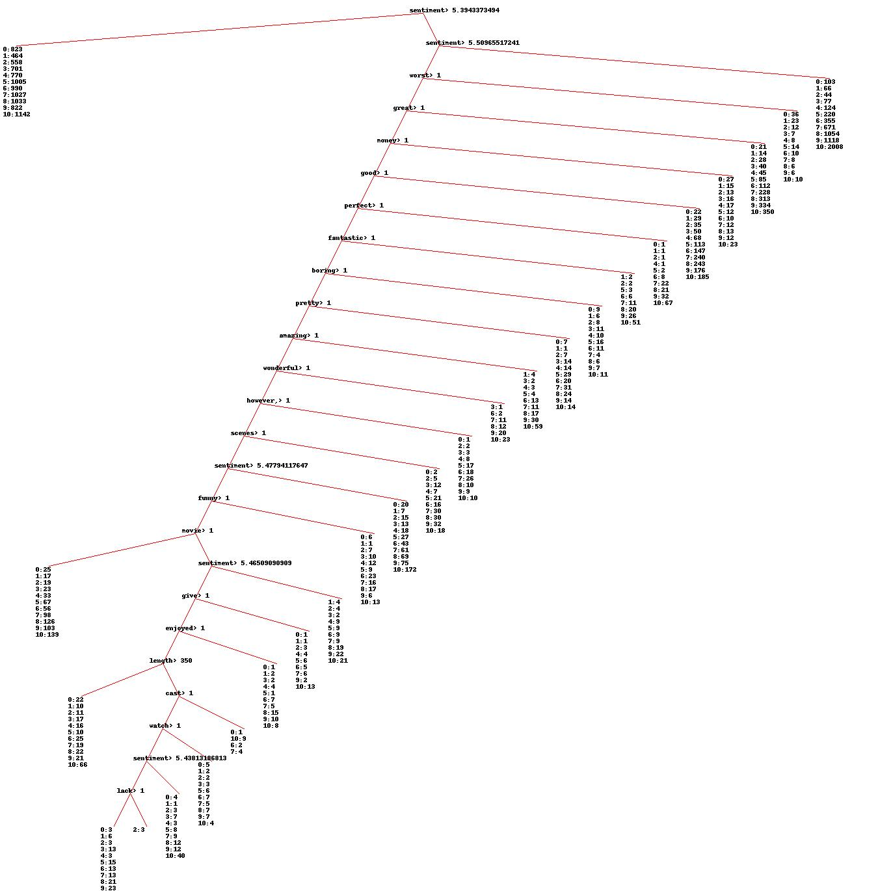

Using Machine Learning on online user reviews.
Motivation
In previous parts we have learned how sentiment and rating is related, but we would like to know more about how the content of the review is connected to its star rating. To reach this goal we will use Machine Learning. If we succeed in this, as a nice side effect, we will be able to classify future results.
Theoretical Foundation What is it really about?
Decision tree is a classifing machine learning algorithm trained by supervised learning. It can take a text and classify it to one of the categories that we define. It is supervised, because we both describe into what categories the data should be classified and because the categories of learning data are already known. This is in contrast to unsupervised learning, where we do not know how to divide the data into categories. In our case we tried to classify the user rating of a review. A big advantage of the decision tree is that after creating it we can easily see the way it partition the data. This is in contrast with other machine learning techniques such as Bayesian classifiers.
Decision trees are constructed by looking through all values of features, dividing the set by this value and seeing when we gain the most information. That is we first pose the question - is the value of this feature smaller than x? We then divide the set according to the answer to that question. But how to gauge the information gain? We substract the information value of the current set and then substract the information value of the divided sets. The information value can be calculated in different ways - eg. by entropy or gini impurity. Because our classification is a set of numbers from 0 to 10 we have chosen to use variance. This method takes into an account that two numbers - eg. rating 1 and 2 are closed to each other than rating 10. To conclude - starting from the root branch containing all data we ask the question, then follow one of the two branches according to answer to the question - and each branch contains one of the divide sets. Then the sets are divided further, until further spliting yields too little information gain.
Choice of training set
To train the classifier we used the reviews posted by metacritic.com users on movies released in 2011 and 2012.
Care must be taken while choosing the training set. Our first attempt used all reviews for movies from year 2012. One of the conclusions made by looking at that tree was that reviews with high sentiment ranking and with at least one occurence of the word "knight" are likely to have many stars. But rather than that being a general feature of movie reviews most likely that is a reference to the popular 2012 movie "The Dark Knight Rises". Similarly the list of most frequently used words used to generate features contained the word "Nolan", the movie director's surname. To avoid this effect we combined the 2011 and 2012 dataset. Adding more years would result in a dataset that is too expensive for our algorithm. Perhaps a better solution would be to choose a random sample from all the years in our datset.
Choice of features
Crucial part of performing machine learning is the choice of features. We want to have many features, so we can learn more about the data set. However, each additional feature increases the time required to create the tree - and not all features lead to interesting result. One kind of features we used is the count of how many times a given word appears in the review. For performance reasons we do not include all words as features - instead we found 300 most popular words in our data set. We then add two additional features - happiness calculated from Sentiment Analysis and the review's length.
Result and conclusions
The tree just after construction is of enormous size and is not easy to visualise or reason about. That is why pruning is done - branches are combined if they yield little information gain. Our results are visualised below. Each node in the tree is the question that divides the data. If the answer is "Yes" follow the right branch. Leaf nodes show the amount reviews with a given rating in that set. The result is visualised below.
By looking at the image we can see that the most important factor is the sentiment. A high happiness leads with good probability to very high ratings, such as 9 or 10. This agrees with the findings of our Sentiment Analysis. It is no surprise that presence of the word "worst" will lead to few starts, while very positive words like "great", "wonderfull", or "fantastic" lead to high ratings. The word "good" is found in reviews with ratings higher than half, reflecting the smaller emotional content of that word. Perhaps surprisngly the word "funny" is not good in dividing the sets. The length feature is used only once, far down in the tree, which suggests that we could remove it from the list of features in our next attempts.
Go back to the list of contents